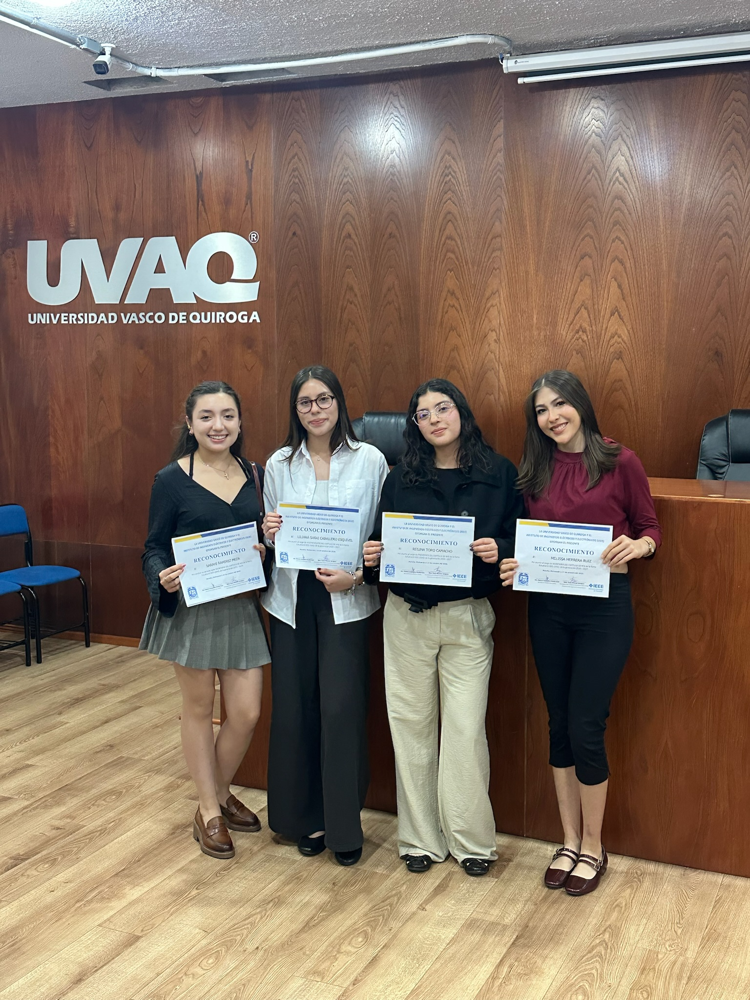
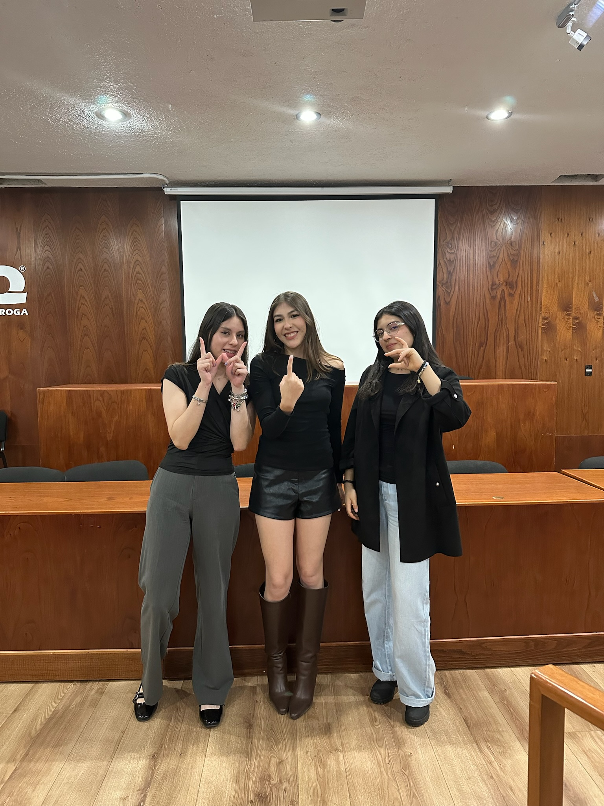
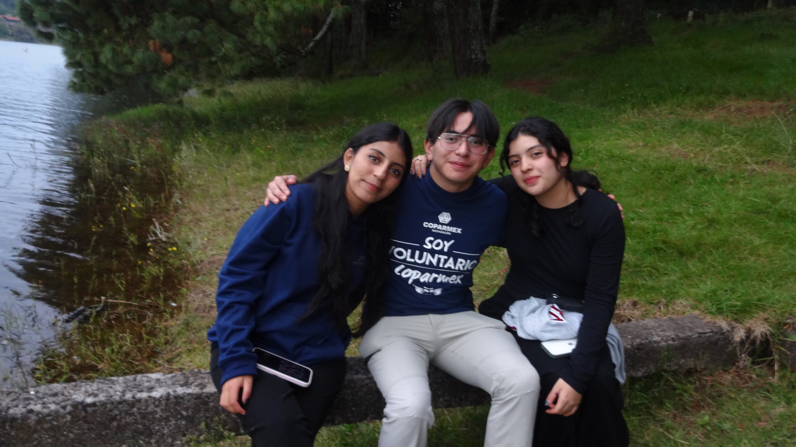
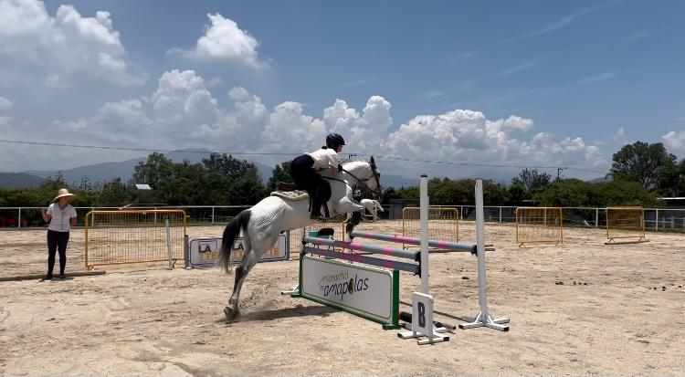
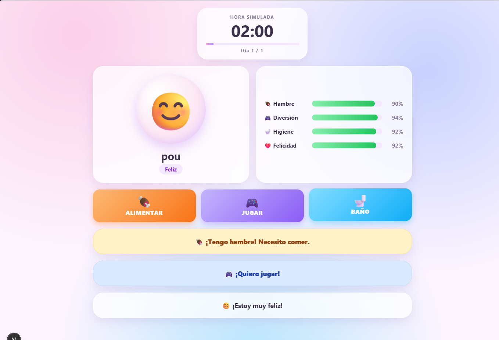
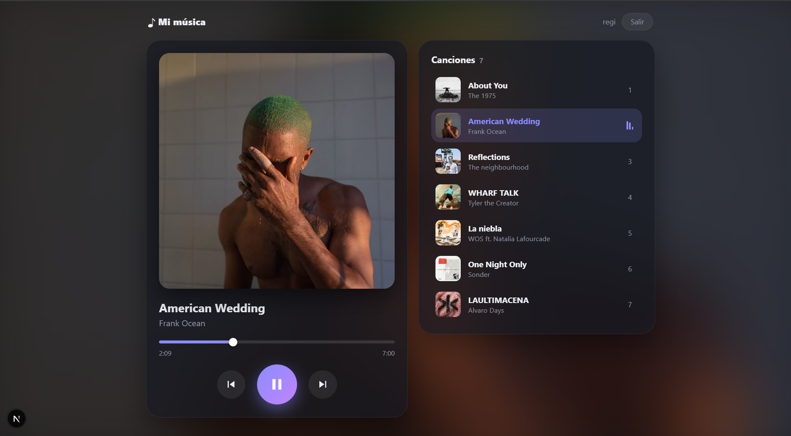
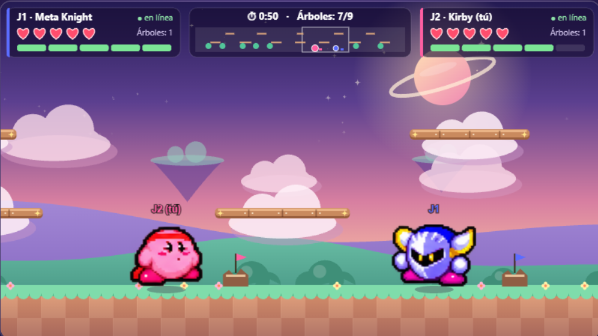

- Comunicación efectiva
- Trabajo en equipo
- Liderazgo
- Resolución de problemas
- Adaptabilidad
- Organización y gestión del tiempo
- Pensamiento crítico
- Creatividad
Sobre mí
Actualmente soy estudiante de Ingeniería en Sistemas en la Universidad Vasco de Quiroga (UVAQ). Tengo 20 años y me encuentro en búsqueda de una oportunidad laboral que me permita adquirir experiencia profesional, desarrollar mis habilidades y poner en práctica los conocimientos que he adquirido durante mi formación académica. Dentro de la universidad participo activamente en diferentes organizaciones estudiantiles, desempeñando cargos como tesorera de la Rama Estudiantil de Ingeniería en Sistemas, secretaria de COPAREMX y presidenta de la rama de afinidad Women in Engineering (WIE). Estas experiencias me han permitido desarrollar habilidades de liderazgo, comunicación, organización, administración de recursos, trabajo en equipo y resolución de problemas. Me considero una persona proactiva, responsable, comprometida y con muchas ganas de aprender, asumir nuevos retos y aportar valor al equipo de trabajo.





1 / 6
Habilidades
Algunas habilidades, las cuales he ido adquiriendo a lo largo de mi formación académica y experiencia práctica.
Habilidades blandas
Habilidades técnicas
Programación
- Java
- Python
- JavaScript
Desarrollo web
- HTML
- CSS
Bases de datos
- MySQL
- PostgreSQL
Herramientas
- Git
- GitHub
- IntelliJ IDEA
- Visual Studio Code
Sistemas operativos
- Windows
- Linux
Idiomas
- Español
- Inglés
- Italiano
Datos curiosos

Dato curioso #1
Me gusta viajar, quiero recorrer el mundo y concer muchos lugares nuevos

Dato curioso #2
Practiqué equitación desde los 6 hasta aproximadamente los 16 años. Es mi deporte favorito, aunque ya no lo practico. :((

Dato curioso #3
me gusta la fotografia
Mis proyectos

Tamagochi web
Este proyecto es un juego web de Tamagotchi hecho con Next.js. El usuario crea a su mascota, la cuida durante un día virtual y debe mantener sus estadísticas de hambre, diversión y limpieza en niveles aceptables para que no se enferme ni termine mal. A lo largo del juego puede alimentar, jugar y bañar a la mascota, mientras aparecen eventos aleatorios y la simulación avanza cada cierto tiempo hasta llegar al final del día.

Reproductor de Música
Reproductor de música web donde los usuarios se registran, inician sesión y escuchan canciones, y la app recuerda la última que escucharon. Está hecho con Next.js y React, usa PostgreSQL como base de datos y bcryptjs para cifrar las contraseñas.

Decision game
Es un juego de aventura narrativa y terror ambientado en los Backrooms, donde el jugador toma decisiones que afectan el desarrollo de la historia y sus diferentes finales. Cuenta con un sistema de cordura, escenas ilustradas, diálogos con efecto de máquina de escribir, música y efectos de sonido. Está desarrollado en Java puro con Swing/AWT, utilizando javax.sound.sampled para el audio, ImageIO para las imágenes y archivos JSON para almacenar la historia.

proyecto
Juego de pelea multijugador 1 vs 1 en tiempo real con personajes como Metal Night y Kirby,creado con Node.js, Express, Socket.IO y HTML5 Canvas, con servidor autoritativo.

Contacto
instagram: toro_regina y github: regitoro
Mi GitHub